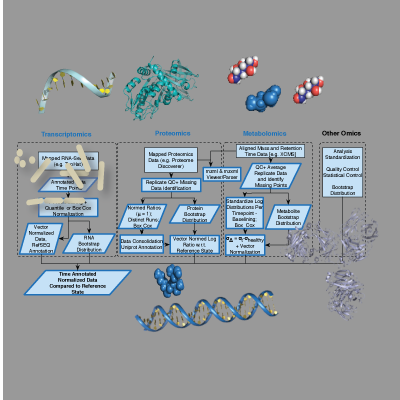
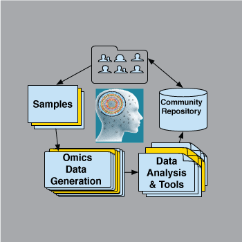

A Generalized Open Source Extensile Framework for Omics Analysis
MathIOmica is based on the Wolfram Language and PyIOmica is written in Python. These *IOmica programs provide a framework for graphical, numerical and symbolic work for omics analyses. The code is cross-platform, open source and includes full integrated documentation.

Multi-Omics Integration
Omics analyses and integration require extensive processing. MathIOmica and PyIOmica provide a user-friendly framework for downstream analysis and visualization.

Scientific Community Resources
Creating models needs robust omics datasets, particularly for time series analyses and network inference. We are building multiple such sets for the community.